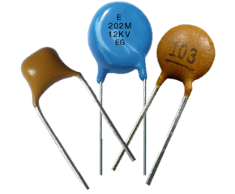
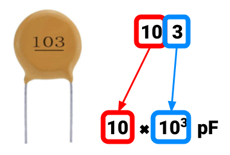
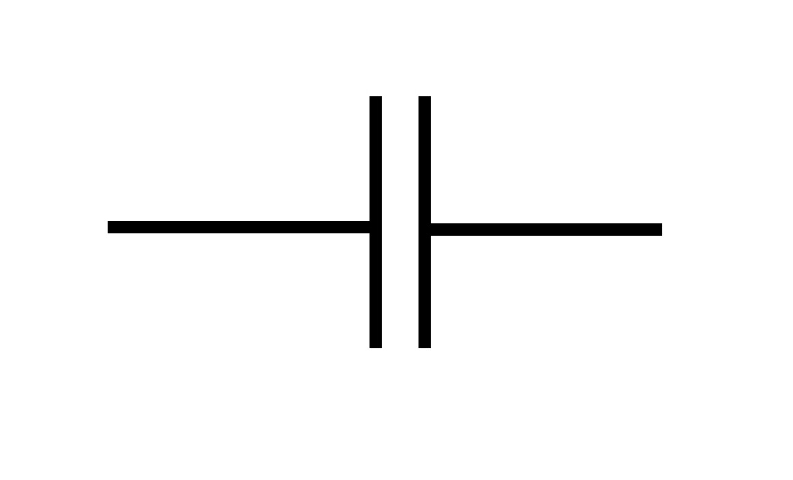
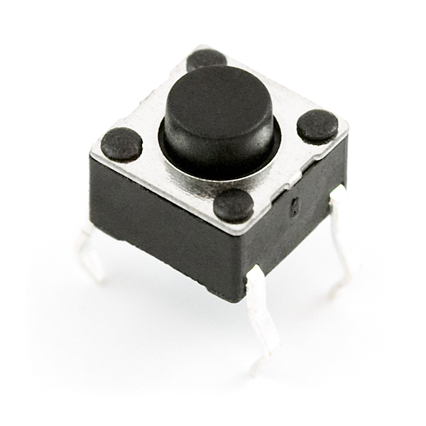
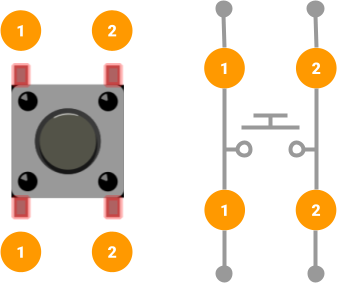
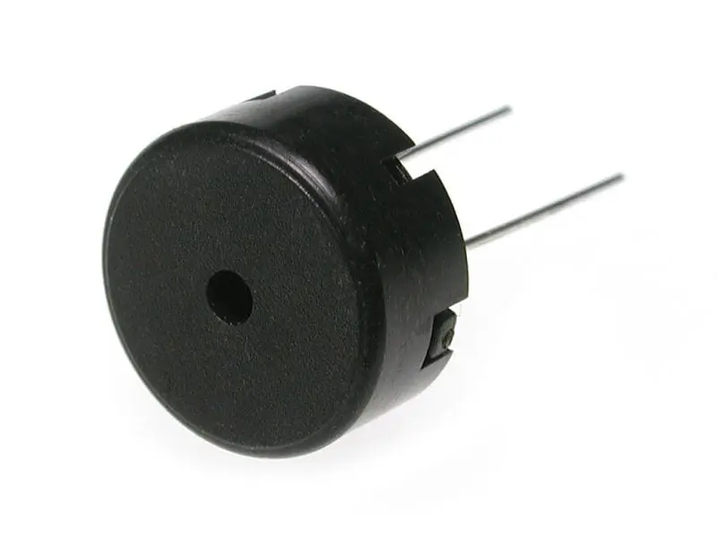
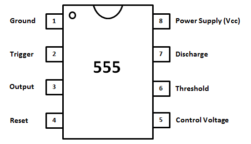
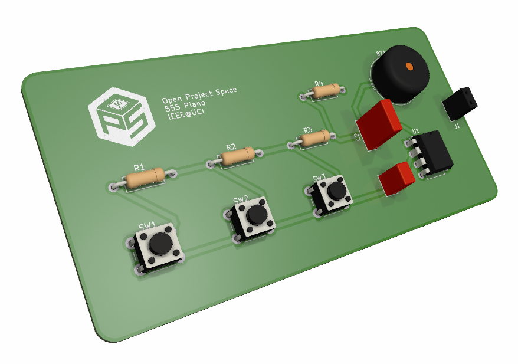
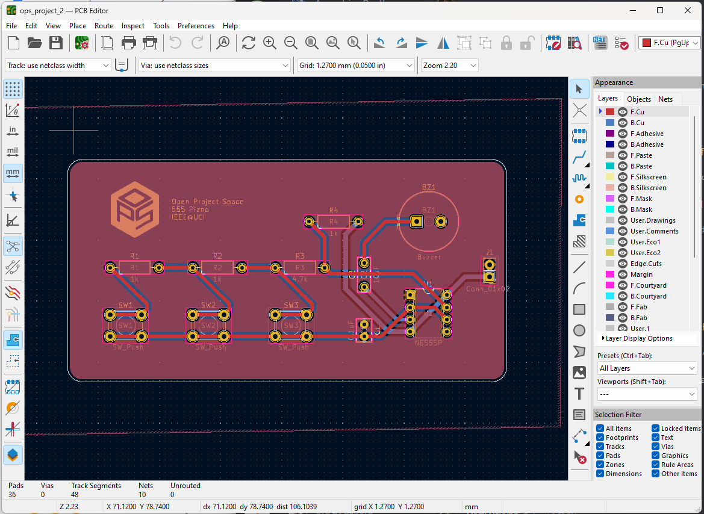

Project 2
555 Piano
By Sahil Dhaktode
Overview
Now that you have created a basic circuit and soldered it on a perfboard, let's explore integrated circuits! You will build two circuits using a 555 Timer IC: (1) a blinking LED circuit, (2) a three-key electronic piano.
Concepts
Ceramic Capacitors
A capacitor is a component that briefly stores electrical energy, which it charges
and discharges in bursts.
It is not a battery. Batteries store energy at a high density and slowly charge and discharge that
energy.

The ability of a capacitor to store energy is its capacitance, measured in farads (F).The higher the capacitance, the longer it can store energy. Naturally, the capacitor will also take more time to charge and discharge.
Common Uses
Capacitors can be used to block low frequency AC current, as is the case with our 555 Piano. A
capacitor in series with the piezo buzzer
filters out the low frequencies to produce clean sound.
We will also use a capacitor in project 2 to configure the NE555P IC. The time it takes for the capacitor to
charge and
discharge determines the delay of the IC.
Capacitor Markings

You can determine the capacitance of a ceramic capacitor from its 3-digit markings. As shown on the right, the first two digits are multiplied by 10 raised to the power of the third digit. The product is the value of the capacitor measured in picofarads, or 10-12F. For example, the capacitor on the right labeled 103 would have a capacitance of 10x10-3pF, which can be converted to 0.01uF or 10nF.Symbol

Our projects make use of ceramic capacitors which have no polarity. Non-polar capacitors are represented by the schematic symbol on the right.Pushbutton

A pushbutton is a type of switch. It completes a circuit when pressed and disconnects the circuit when released.Pushbutton Legs

The figure shows that the legs labeled 1 are internally connected. This pair of legs acts as one node in our circuit. The same is true for the legs labeled 2.Legs 1 and 2 are connected only while the button is pressed. This means that when the button is pressed, all four of its legs are connected as a single node.
Symbol
Though pushbuttons have four legs, their schematic symbol reduces the complexity to two terminals (as depicted in the figure). We can think of legs 1 as one terminal and legs 2 as the opposite terminal.
Piezoelectric Buzzer

A piezoelectric buzzer is a component used to produce sound.Piezo buzzers come in two varieties: active and passive. Active buzzers have a built-in oscillator with a set frequency, meaning that they can only produce a single-tone sound. Passive buzzers do not but can produce different notes based on the frequency of the oscillating signal that it is fed.
We will use a passive piezo buzzer to play different notes on the 555 Piano.
Symbol
The symbol on the right depicts a non-polar piezo buzzer. The symbols for speakers and piezo buzzers are often used interchangeably.
NE555P IC
The 555 Timer is one of the most popular integrated circuits for hobby projects. It
has multiple use cases,
but we will operate the timer in astable mode.
In this mode, it outputs an oscillating digital waveform (see the image below),
which we will feed to the piezo buzzer.

Remember that the frequency of the waveform is the same as the pitch of the buzzer sound.
Pinout Diagram
We will use the NE555P, a variant of the 555 Timer. Its pinout diagram is shown below.

The pinout diagram identifies each contact or pin of the IC. Usually, a datasheet
will
include a pinout and a table that matches each pin with a description. The pinout may
change depending on the IC’s packaging, which the datasheet will indicate. For this
project, the IC package is DIP.
Note that the organization of the pinout differs from the schematics below. The true location of the
ICs pins is shown by the
pinout, not the schematic. Use the notch (the U-shaped indentation) on the top of the DIP-style IC to find its correct orientation:
the pin directly left to the notch will always be pin 1.
How It Works
Learn more about 555 Timer’s functionality in the lecture material here.
Printed Circuit Board (PCB)

Breadboards and perfboards are great for prototyping simple circuits. However, when electronics are more complex or are ready for production, we typically use printed circuit boards or PCBs. Nearly every device, from a digital alarm clock to a laptop or computer, uses a PCB. It is a board designed with ECAD software, that connects individual components.The benefits of PCBs over prototyping boards are numerous: They're more compact, more reliable, and enable complex circuit design. Above all, they are easy to mass produce.
For this project, you will solder the 555 Piano to a PCB we designed in an ECAD software called KiCAD (as seen below). If you are not enrolled in the course, you may alternatively use a perfboard.

Soldering to a PCB is much like soldering to a perfboard, and you may even find it easier. For more soldering tips visit our workshop material here.
Requirements
For readers who are enrolled in the course: In order to receive full marks on your project submission, make sure it meets the following minimum requirements.
555 LED Blinker
- You must build a blinking LED circuit.
- The LED in the circuit must cycle at a rate of roughly once per second.
- The LED must be brightly lit when turned ON.
- The LED must be completely dark when turned OFF.
- The circuit must be built on a breadboard.
555 Piano
- You must build an electronic “piano” circuit with three buttons.
- The circuit must emit a distinct tone for each of the three buttons pressed.
- When a button is pressed, the piezo should emit minimal static noise.
- The circuit must emit tones at a reasonable volume (not too low).
- The circuit must be soldered to the provided PCB.
Parts
| Part Name | Qty |
|---|---|
| Breadboard | 1 |
| Battery (9V) | 1 |
| Dupont 9V Snap Connector | 1 |
| Header, 2.54mm, Female, 1x2 | 2 |
| NE555P IC | 1 |
| Resistor, 1kΩ | 3 |
| Resistor, 4.7kΩ | 1 |
| Resistor, 470kΩ | 1 |
| Switch, Tactile | 3 |
| Dip Socket, 8 pin | 1 |
| LED, 2V | 1 |
| Capacitor, 0.1µF | 1 |
| Capacitor, 1µF | 1 |
| Capacitor, 10µF | 1 |
| 555 Piano PCB or Perfboard | 1 |
| Piezo Buzzer, 1.5V | 1 |
| Jumper Wire | ? |
Schematics

Instructions
Checkpoint 1
-
Build the circuit from Schematic A on your breadboard.
Refer closely to the 555 Timer IC pinout diagram. The schematic does not show the true location of each pin on the IC, but the pinout does.
Use the capacitor marking guide when looking for the right capacitors for this circuit.- Verify that the circuit meets the design requirements. Before proceeding to the next checkpoint, make sure you have created the required deliverables.
Checkpoint 2
- Deconstruct the circuit you built in Checkpoint 1 and reuse the components to build the circuit from Schematic B (the piano) on the breadboard.
- Verify that the circuit meets the design requirements (no soldering required yet). Before proceeding to the next checkpoint, make sure you have created the required deliverables.
Checkpoint 3
-
Enrolled Students: Solder the circuit components from Schematic B to the provided PCB.
If you do not have a PCB, you may use a perfboard instead.
Do not solder the 9V snap connector to the PCB. Instead, solder the female 1x2 header to the board. The snap connector will be inserted into the header’s terminals.Do not solder the NE555 IC to the PCB. Instead, solder the 8-pin DIP socket to the board. The IC will be inserted into the DIP socket.
Deliverables
Students enrolled in the course must submit the deliverables below to the corresponding Canvas course assignment.
Place the following files in a single folder:-
Video of the 555 LED Blinker (Schematic A) circuit on a breadboard
The video should clearly show the LED blinking ON and OFF.
-
Video of the 555 Piano (Schematic B) circuit on a breadboard
Make sure to press each button in the video. The video must include sound.
-
Video of the 555 Piano (Schematic B) circuit soldered to the PCB
Make sure to press each button in the video and show the soldered side. The video must include sound.
Compress the folder to a zip file and rename the file using the format “ops_project#_lastname_firstname.zip” Then, submit the zip file to the Project 2 Canvas assignment.